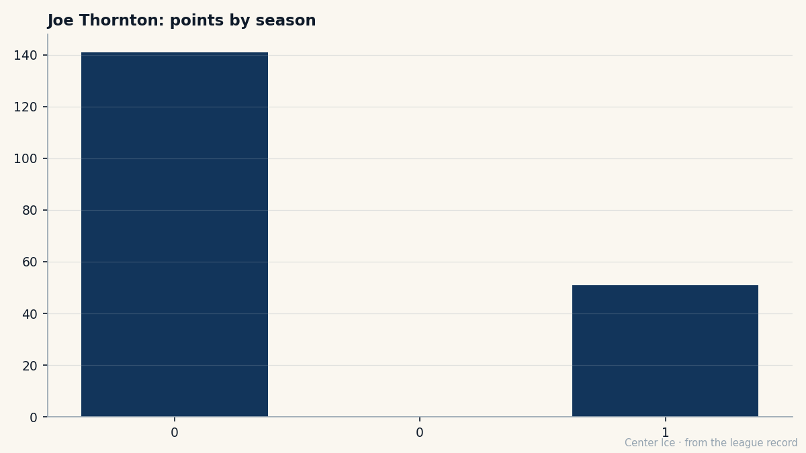

The bar is mine: Joe Thornton's 141, his 51, and the 29 points around it
A number one pick sets his own standard at 141 points, then watches his team sit at 29. What it means to be the best thing in a room that is not bad, just not enough.
 Carol BinghamFeatures writer · Rinkside
Carol BinghamFeatures writer · Rinkside"I put up 141 last year, so the bar is mine and it's high,"  Joe Thornton92 told The Tunnel's Jan Kowalczyk after a 2-4 loss to
Joe Thornton92 told The Tunnel's Jan Kowalczyk after a 2-4 loss to  Ottawa Senators on Saturday. "Thirty in thirty's nice. I'd trade half of it, honest, for where we sit."
Ottawa Senators on Saturday. "Thirty in thirty's nice. I'd trade half of it, honest, for where we sit."
He said it the way a man describes a weight he has carried so long he has forgotten it is unusual. He has 30 goals in 30 games, 51 points, a 139 pace, which is the same number he finished with last year when 72 games produced 141. The team is 11-14-3, 29 points, the specific middle that is hardest to explain to a fan who remembers the playoffs.

The  Boston Bruins made the playoffs last year. Twelve games, four wins, six losses. This year, 29 points in 30 games. The pace is about 79 for the season, which puts the team in the conversation in March and out of it by April. A number one pick scores 30 goals in a month and the record does not move.
Boston Bruins made the playoffs last year. Twelve games, four wins, six losses. This year, 29 points in 30 games. The pace is about 79 for the season, which puts the team in the conversation in March and out of it by April. A number one pick scores 30 goals in a month and the record does not move.
Thornton was the first pick in 1997 and is 25 now, seven years after the draft, and the gap between 18 and 25 is the whole arc of what a number one pick becomes. The Book has him at 91, flat, no form modifier, which means he is exactly where the scouts expect him to be. The team is 29 points, and that number does not match the 51.
The middle is not a crisis, and that is what makes it hard to fix. A crisis gets attention: the room huddles, the coach changes something, the players find a reason. The middle is a slow bleed. You lose one, you win one, you lose two, you win one, and the record drifts. The 29 points are a fact, and the fact is that the best player on the team is doing his job, the team is doing its job, and the two jobs do not add up to the same thing.
"The points don't, they don't feel like much when the room's quiet," he said. It is a description, not a complaint. The room is quiet because the record is 29 points, and the 51, the 30 goals, the 139 pace are facts that do not make the room less quiet.
Last year, 141. This year, 51 in 30. The bar is his and it is high, and the team is below it. The 141 belonged to one man in a room of 20, and the room was 12 games deep in a first round before it stopped. The 51 is the same number, just earlier, and the room is 29 points deep in a season.
He is 25, and the contract year is not this one, so the question of what comes next can wait. The question for this season is whether the gap between 29 and 51 closes by March. The Book says the player is where he should be; the scoreboard says the team is where it should be. They do not meet, and that is the season.